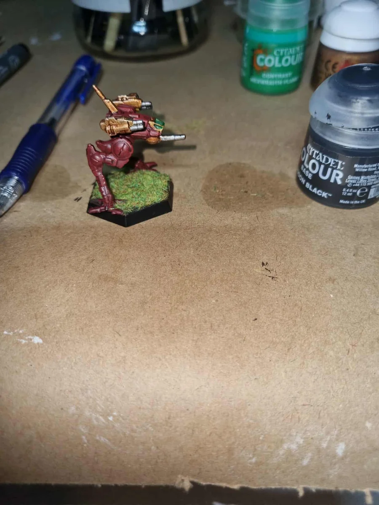
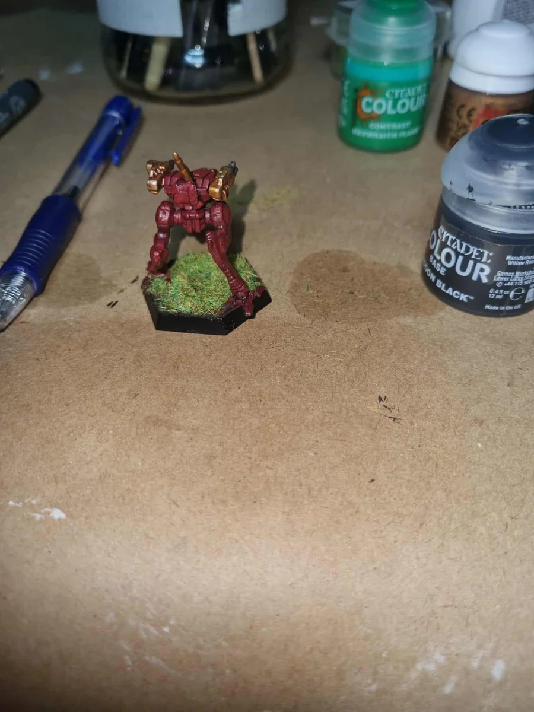
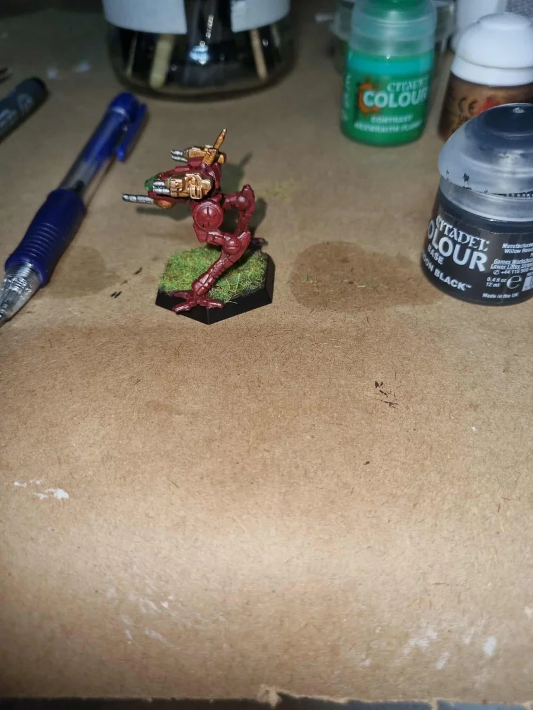
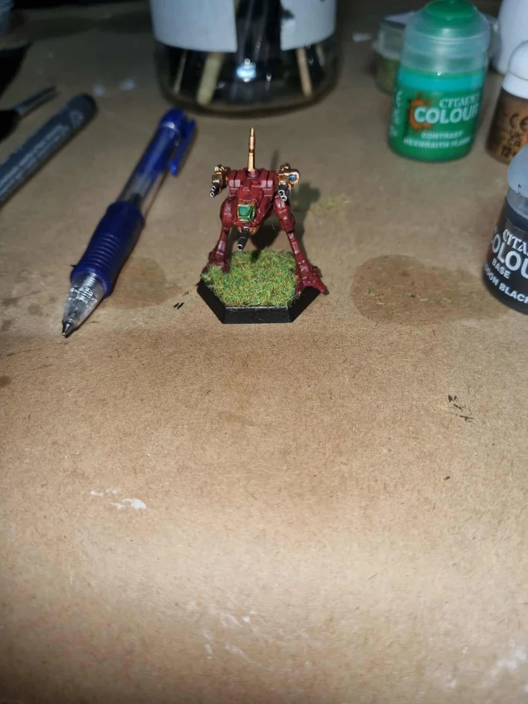
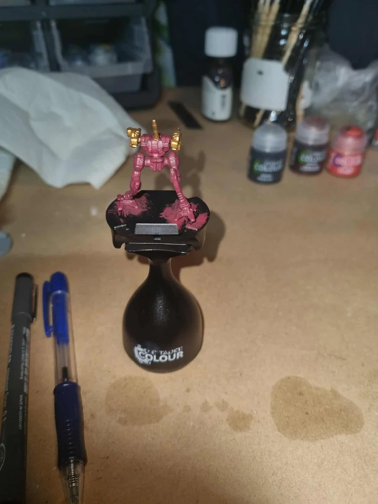
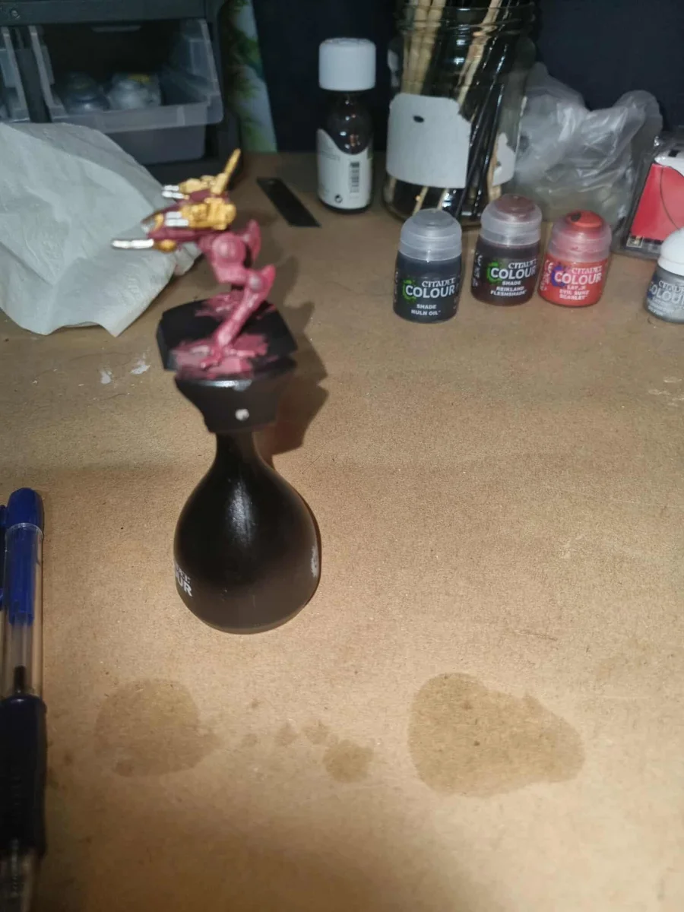
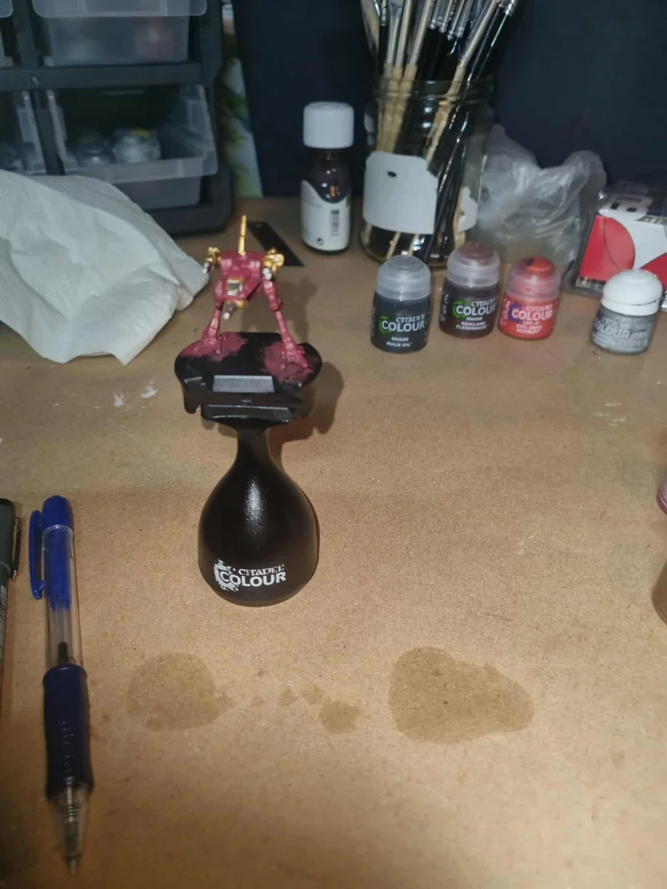
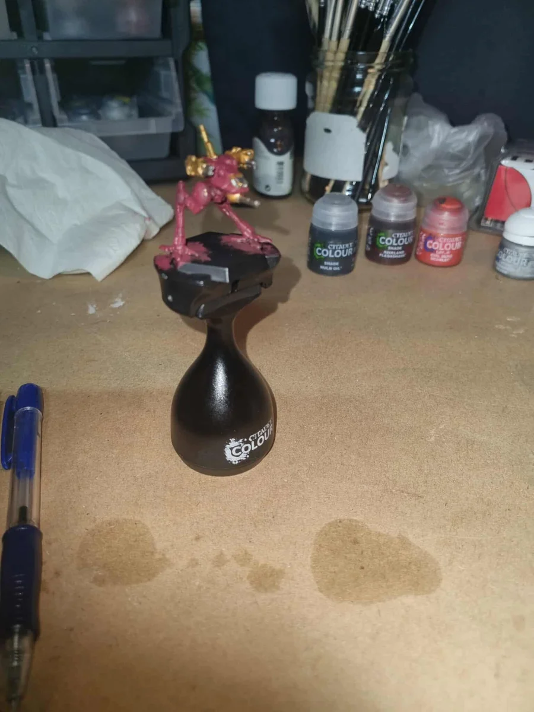

Miniatures / BattleTech
Miniature painting / BattleTech
BattleTech
From the painting handle to the tabletop. My BattleTech miniature in deep red armour, with gold details, metallic weapons and a green cockpit — finished with a grassy hex base.
01 / Ready for the tabletop
The finished miniature Four angles of the completed paintwork. Select a photograph to enlarge it.

↗ Finished miniature, side view: deep red armour, gold details and a green cockpit. 
↗ Rear view of the finished miniature on its grass-covered hex base. 
↗ The opposite side, showing the metallic weapons and red leg armour. 
↗ Front view of the finished miniature, with the green cockpit and grassy base. 02 / At the painting desk
Painting in progress Earlier views on the painting handle, before the grassy base was added.

↗ Painting in progress: rear view on the painting handle. 
↗ Painting in progress: side view with the gold weapon details in place. 
↗ Painting in progress: front view before the base was finished. 
↗ Painting in progress: an angled view of the red and gold colour scheme. ×